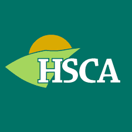
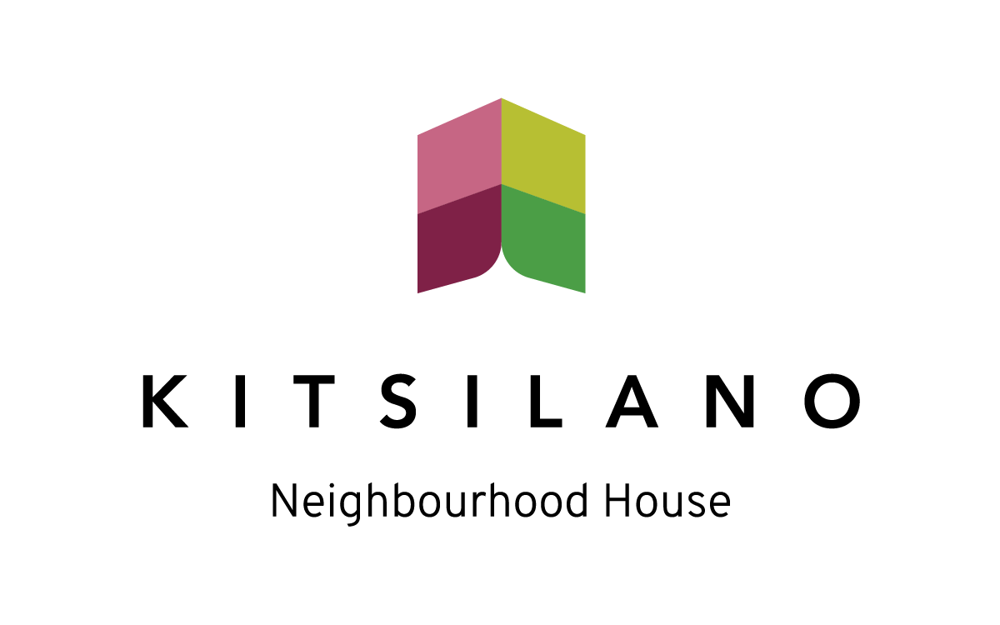

Neighbourhood tools
Is Your Neighbourhood Ready for What's Next?
Five questions, about five minutes. You get an understanding of where your neighbourhood stands today, and what to do about it.
Start the assessmentPhotograph goes here
A real Calgary neighbourhood, or an Imagine Cities session. People in conversation, not a stock crowd.
Built with community associations in Calgary and Vancouver


Why This Matters
The Harwood Institute found that most people act as though their community is already growing, and then wonder why so many initiatives flounder or fail.
Community Rhythms, 1999, from fieldwork in five American cities.
Strategies that work for a neighbourhood with momentum tend to fail in one that is still rebuilding trust. Knowing where yours actually sits is what makes the difference between effort that compounds and effort that disappears.
What You Get
-
Where your neighbourhood stands
Which of five stages best matches what you described, explained without jargon.
-
Why it is there
What shaped the result, and what that usually means for a neighbourhood like yours.
-
What to do next
Practical steps suited to where your neighbourhood actually is, not generic advice.
The Five Stages
The assessment asks about five factors: hope and optimism, collaboration, leadership, progress, and resilience. Your answers place your neighbourhood in one of five stages.
- Waiting PlaceSomething is not working, but nobody can quite name it.
- ImpasseThe problem is named and urgent, and action has stalled.
- CatalyticSmall groups are testing what works.
- GrowthProgress is visible and spreading.
- Sustain & RenewThe neighbourhood adapts and keeps going.
This is not a score or a ranking. Neighbourhoods move along this spectrum in both directions, and a stage can be temporary. Reaching Impasse is a step forward from the Waiting Place, because the problem has become clear enough to act on.
See Where Your Neighbourhood Stands
Five questions, about five minutes. You will get something concrete to bring to your next conversation, and a result that is a reflection rather than a verdict.
Start the assessment